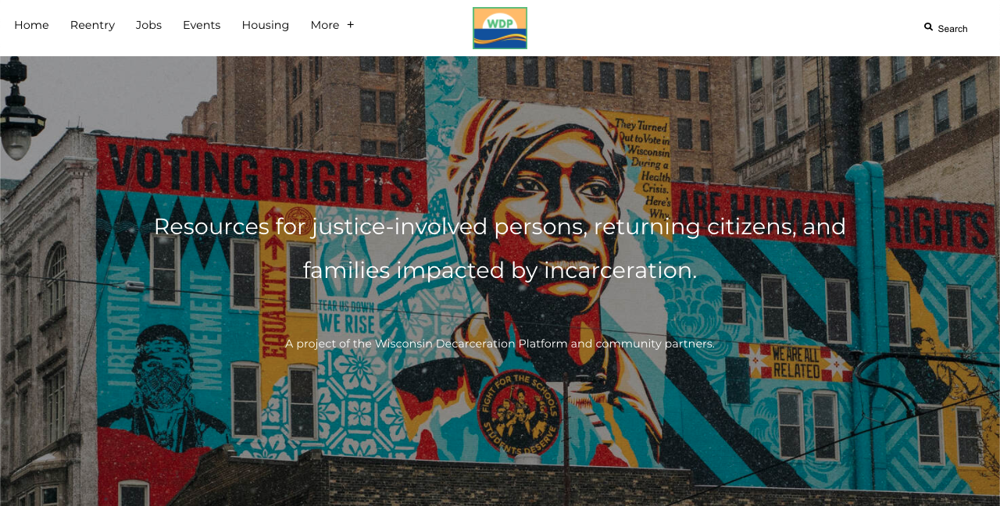
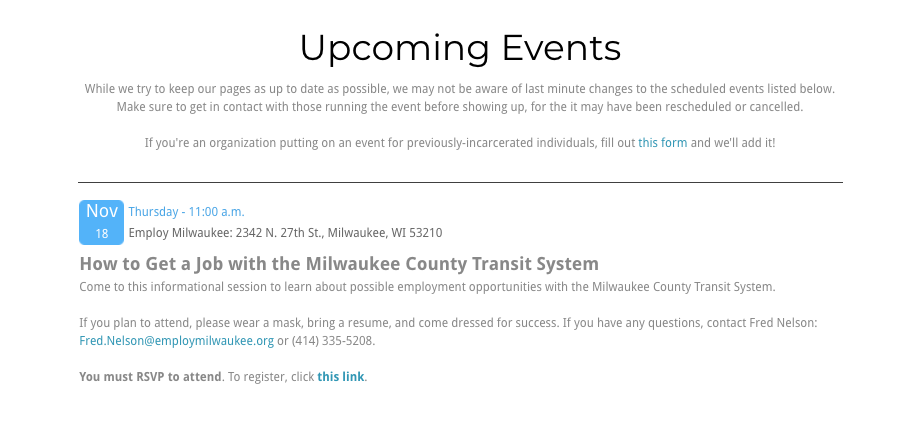
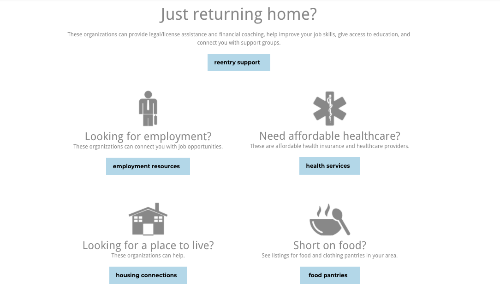
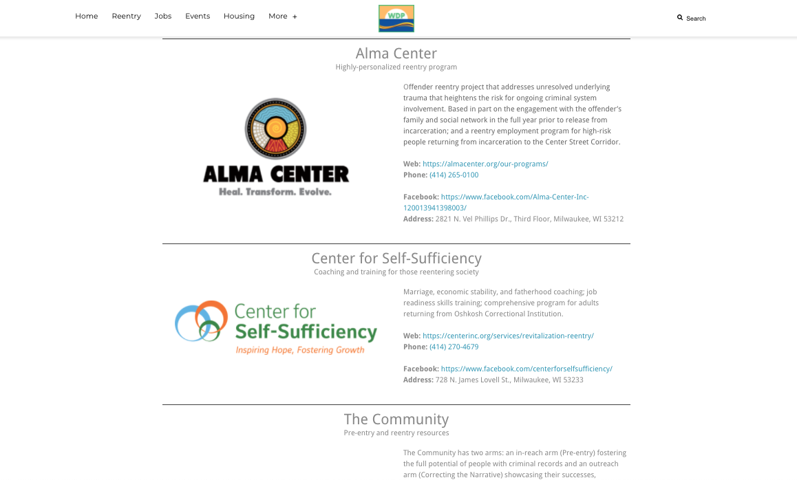

Wisconsin Decarceration Platform
The Wisconsin Decarceration Platform is a group based in Milwaukee
formed to provide resources to those impacted by the criminal justice
system. I worked very closely with people with less experience with
technology to turn their ideas into features of the site. This project
shows that I have experience in talking to people not as well-versed
in the tech space and am able to communicate my technical ideas in
a way they can understand. My position was (and still is) the Webmaster
of their Weebly website. I took information they had, moved it, and
formatted it in a way that is easier to digest and sift through so
that visitors to the site could find what they were looking for more
quickly. I also added features that Weebly doesn’t natively support
through custom HTML and JavaScript, like adding an events page that
generates an attractive list of events from inputted data.

I was able to establish and maintain a common design language throughout
this project, scaling it as more information was added. A large part of
this project was the site’s organization, and I feel I have made a great
blueprint for how information is presented on all parts of the site. A
large challenge I had with the site at first is that since Weebly doesn’t
easily support databases, the data is not actually stored anywhere except
for on the webpages themselves. While this is not an issue for many sections
of the site, for parts that needed to be generated with common style like
an events page, static text boxes were not going to cut it. I solved this
roadblock by storing the data in JSON format in a custom HTML block, then
in that same block used some JavaScript to manipulate the data and generate
HTML based on the events data, hiding events if they’ve passed. Through
working on the Wisconsin Decarceration Platform, I have improved my
communication skills, especially when speaking to people not well-versed in
the tech space. Being able to translate between tech speak and common
English will be an especially useful tool for me in the future.

I also, through some trial and error, found a method of organization
to take in many small requests, prioritize, then act on them in a
timely manner, something that will also very much help my disorderly
brain in my years to come. I also learned some very simple image editing
techniques when cutting and coloring photos to use as icons on the
homepage, something I didn’t know I would be able to figure out so easily.
While I’ve used HTML before, I had never used JavaScript to generate an
entire page of it, so figuring out that I could dynamically update an
entire webpage as data changed was a very interesting technique that I
will definitely be using on future projects. As for opportunities for
improvements, I would love to look into making more complex uses of
dynamic HTML updates without page refreshes.

